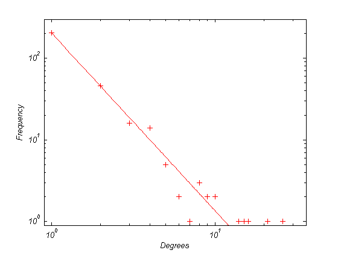
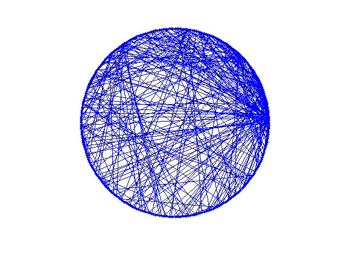

B-A Scale-Free Network Generation and Visualization
By Mathew Neil George
Contents
Description and Cautions
The SFNG m-file is used to simulate the B-A algorithm and returns scale-free networks of given node sizes. Understanding the B-A algorithm is key to using this code to its fullest. Due to Matlab resource limitations, it may not be possible to generate networks much larger than 15000 nodes, and increasing the mlinks variable increases processing time severely. This code was developed so that one could generate a network of small size, and then use that network as a seed to build a greater sized network, continuing this process until the actual desired network size is reached. This is for processor and time management purposes. However, realize that the initial seed does not have to have scale-free properties, while the later seeds may happen to have these properties. Therefore, it is prudent not to make the initial seed size much larger than a few nodes (most commonly 5 interconnected nodes). In addition, the mlinks should be kept constant throughout the creation of the scale-free network.
The PLplot m-file takes a scale-free network in adjacency matrix format and draws a best fit line to the frequency of degrees distribution of the nodes. Degree is the number of links that connect to and from a single node For scale-free networks, the frequency of degrees distribution forms a power-law curve, with an exponent usually between -2 and -3. This code is designed to allow only non-zero frequencies to be graphed in log-log format. The function returns the equation of the power-law fit in a cfit variable.
The CNet m-file function creats a network graph using the gplot function with circular coordinates. It allows for a simple, yet intuitive, visualization of a given network.
Parameters
SFNG
- Nodes is the desired network size, including the seed network size (i.e. Nodes minus seed network size equals the number of nodes to be added).
- mlinks controls the number of links a new node can make to the existing network nodes.
- seed is the original network to which the B-A algorithm links additional nodes with a specific preferential attachment procedure. This undirected adjacency matrix can be created manually, or one could use the Adjacency Matrix GUI. Each node must have at least one link. The seed variable can be replaced with a developed scale-free network to generate a larger one. Make sure the new Nodes variable is greater than the size of the seed network.
PLplot
- Net is the input network which is to be graphed.
CNet
- Net is the input network which is to be graphed.
Note that variables Nodes, mlinks, and size must be whole numbers and variables seed and Net must be undirected adjacency matrices. The diagonol elements of any adjacency matrix used with these functions must all be zero.
Sample Output
Here is a small example to demonstrate how to use the code. This code creates a seed network of 5 nodes, generates a scale-free network of 300 nodes from the seed network, and then performs the two graphing procedures.
seed =[0 1 0 0 1;1 0 0 1 0;0 0 0 1 0;0 1 1 0 0;1 0 0 0 0] Net = SFNG(300, 1, seed); PL_Equation = PLplot(Net) CNet(Net)
seed =
0 1 0 0 1
1 0 0 1 0
0 0 0 1 0
0 1 1 0 0
1 0 0 0 0
PL_Equation =
General model Power1:
PL_Equation(x) = a*x^b
Coefficients (with 95% confidence bounds):
a = 204.1 (200.4, 207.7)
b = -2.177 (-2.264, -2.09)
  References
One explanation of the B-A Algorithm can be found on this PDF website http://arxiv.org/PS_cache/cond-mat/pdf/0107/0107420.pdf
Undirected Adjecency Matrices are defined on Wikipedia.org http://en.wikipedia.org/wiki/Adjacency_matrix
The Adjacency Matrix GUI file by Steve Chuang can be found on the Matlab File Exchange http://www.mathworks.com/matlabcentral/fileexchange/loadFile.do?objectId=6937&objectType=file
Acknowledgements
Special thanks to Mark Ballerini with the Massapequa High School Science Research Program and Zoltan Dezso at the University of Notre Dame for their invaluable help in researching network theory as well as to my family for providing motivation and encouragement in pursuing science.